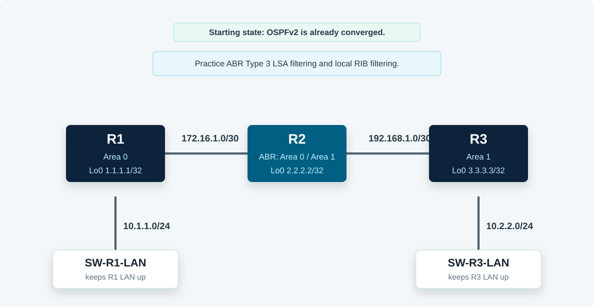

Overview
This lab starts with a working multi-area OSPFv2 topology. You will first filter Type 3 LSAs at the ABR with an area filter list, then apply a local inbound distribute list on R1 to suppress one OSPF route from the routing table while leaving the LSA visible in the OSPF database.
All commands in this guide use the CML Ethernet interface names shown in the topology.
Topology
R2 is the ABR between area 0 and area 1. The two small IOL-L2 switches keep the LAN-facing router interfaces operational so the 10.1.1.0/24 and 10.2.2.0/24 prefixes are present during the lab.

Task 1: Verify the Starting OSPF Routes
On R1, verify that area 1 loopbacks and the R3 LAN are visible as inter-area OSPF routes.
! R1
show ip ospf neighbor
show ip route ospf
show ip route 2.2.2.2
show ip route 3.3.3.3
show ip route 10.2.2.0Expected result: R1 learns 2.2.2.2/32, 3.3.3.3/32, 10.2.2.0/24, and 192.168.1.0/30 through R2.
Task 2: Build the ABR Prefix List
On R2, create a prefix list that denies the R2 and R3 loopbacks but permits all other prefixes.
! R2
conf t
ip prefix-list NO-LOOPBACKS seq 10 deny 2.2.2.2/32
ip prefix-list NO-LOOPBACKS seq 20 deny 3.3.3.3/32
ip prefix-list NO-LOOPBACKS seq 30 permit 0.0.0.0/0 le 32
end
show ip prefix-list NO-LOOPBACKSTask 3: Apply the Area Filter List on the ABR
Apply the prefix list on R2 so those Type 3 LSAs are filtered as they enter area 0.
! R2
conf t
router ospf 2
area 0 filter-list prefix NO-LOOPBACKS in
end
show running-config | section router ospf
show ip ospf database summaryTask 4: Verify the ABR Filter from R1
Confirm that R1 no longer installs or sees summary routes for the filtered loopbacks, while other area 1 summaries remain available.
! R1
show ip route ospf
show ip route 2.2.2.2
show ip route 3.3.3.3
show ip route 10.2.2.0
show ip ospf database summaryExpected result: the loopback routes are gone from R1, but 10.2.2.0/24 and 192.168.1.0/30 remain.
Task 5: Filter One Route Locally with a Distribute List
On R1, create a prefix list that denies only the R3 LAN and apply it inbound under the local OSPF process.
! R1
conf t
ip prefix-list FILTER_10.2.2.0 seq 10 deny 10.2.2.0/24
ip prefix-list FILTER_10.2.2.0 seq 20 permit 0.0.0.0/0 le 32
router ospf 1
distribute-list prefix FILTER_10.2.2.0 in
end
show ip prefix-list FILTER_10.2.2.0
show running-config | section router ospfTask 6: Compare the OSPF Database and Routing Table
Verify the difference between ABR LSA filtering and a local distribute list. The R3 LAN summary should still exist in R1's OSPF database, but it should not be installed in R1's routing table.
! R1
show ip ospf database summary 10.2.2.0
show ip route 10.2.2.0
show ip route ospf
show ip protocols | section Routing for Networks|DistributingExpected result: 10.2.2.0/24 remains visible as a summary LSA but is absent from the RIB because the distribute list filters route installation locally.